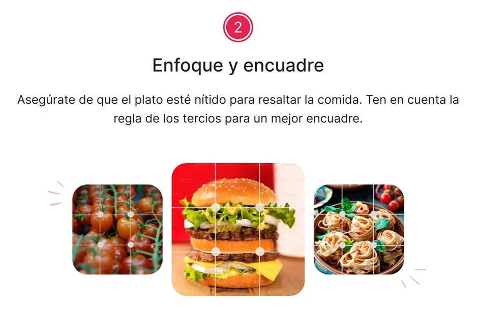
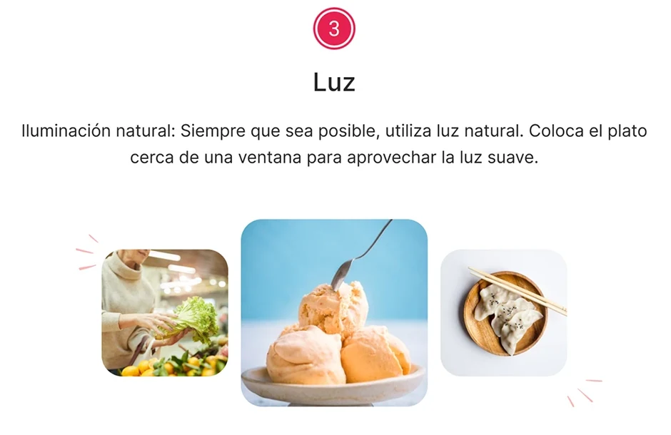
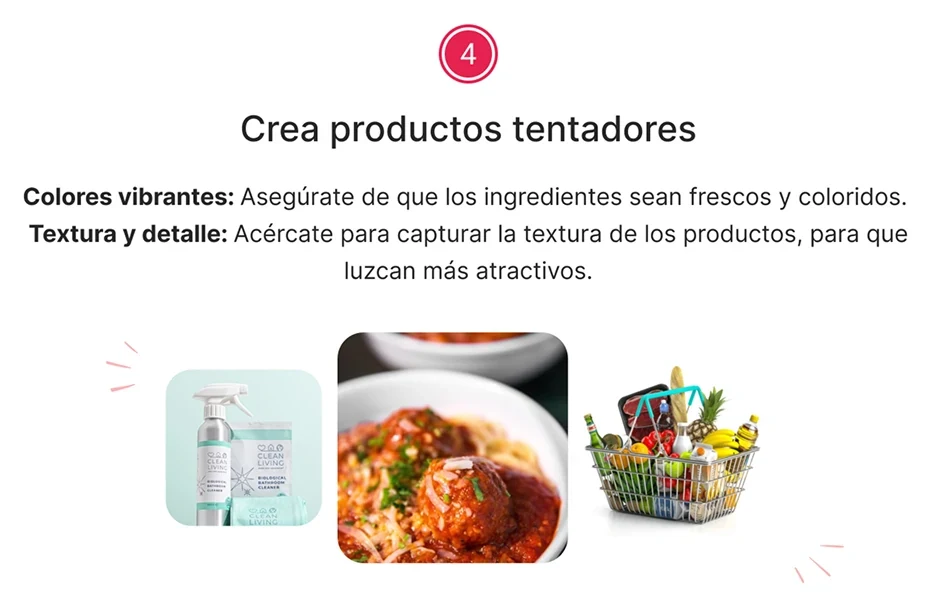
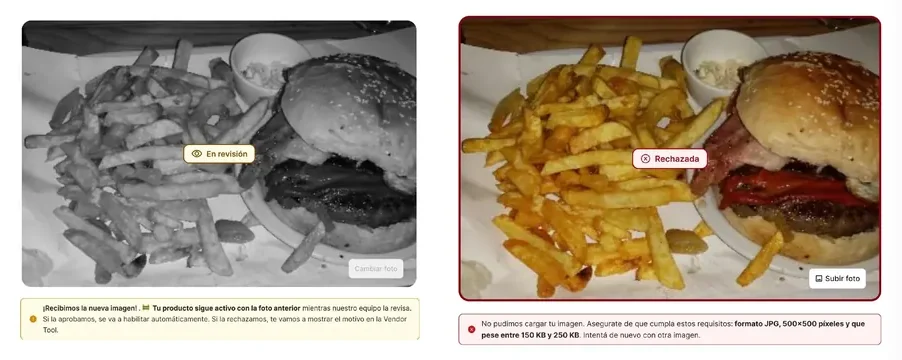

Coach the photo where it gets uploaded
Monchis' own product copy tells vendors that 2 out of 3 customers decide based on the photo. Photos were also the hardest thing to keep consistent across 545 independent vendors.
So the help sits where the photo is. A "Tips de fotografía" button opens a short guide: framing and the rule of thirds, natural light, and colours and textures that make a dish look good.
Every new photo then goes to the Monchis team for review before customers see it. While it waits, the product stays live with the previous photo. If it is rejected, the vendor sees why and can try again. If it is approved, it goes live with nothing more for the vendor to do.

Keep the dish sharp and use the rule of thirds.

Use natural light, and place the dish near a window.

Vibrant colours, and get close to show texture.
